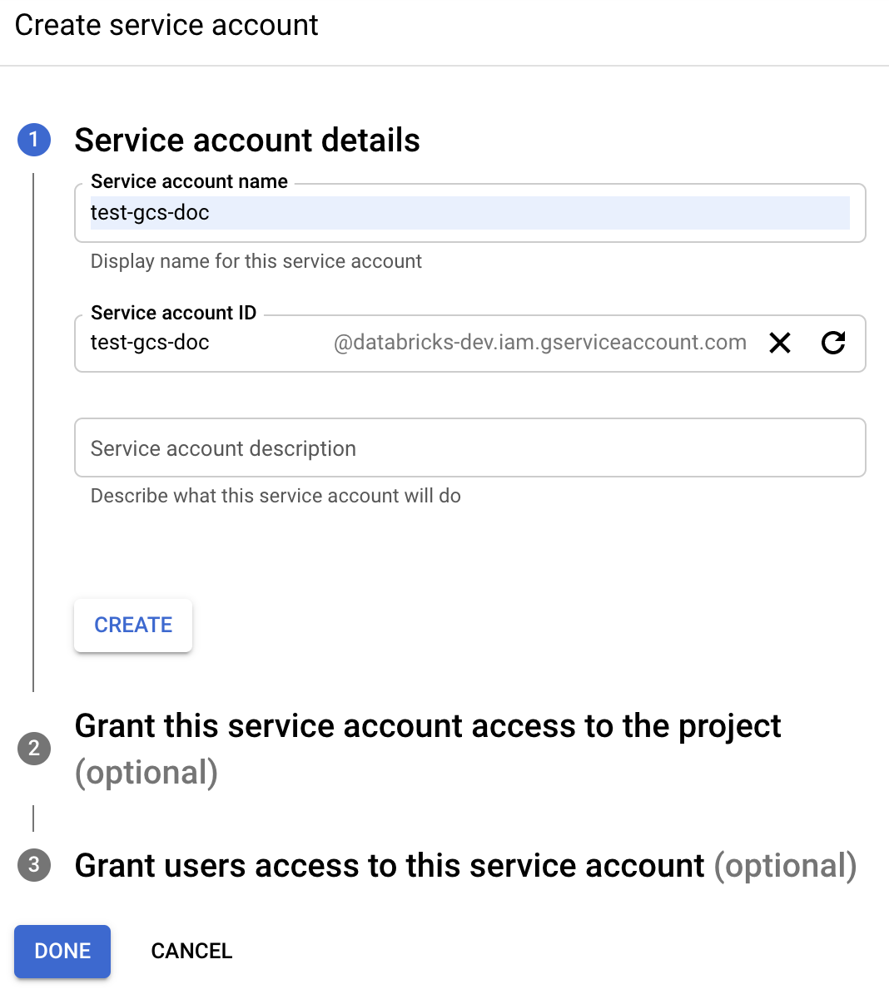
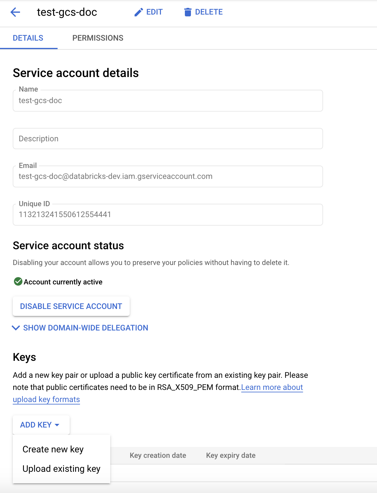

Connect to Google Cloud Storage
This article describes how to configure a connection from Databricks to read and write tables and data stored on Google Cloud Storage (GCS).
To read or write from a GCS bucket, you must create an attached service account and you must associate the bucket with the service account. You connect to the bucket directly with a key that you generate for the service account.
Access a GCS bucket directly with a Google Cloud service account key
To read and write directly to a bucket, you configure a key defined in your Spark configuration.
Step 1: Set up Google Cloud service account using Google Cloud Console
You must create a service account for the Databricks cluster. Databricks recommends giving this service account the least privileges needed to perform its tasks.
Click IAM and Admin in the left navigation pane.
Click Service Accounts.
Click + CREATE SERVICE ACCOUNT.
Enter the service account name and description.
Click CREATE.
Click CONTINUE.
Click DONE.
Step 2: Create a key to access GCS bucket directly
Warning
The JSON key you generate for the service account is a private key that should only be shared with authorized users as it controls access to datasets and resources in your Google Cloud account.
In the Google Cloud console, in the service accounts list, click the newly created account.
In the Keys section, click ADD KEY > Create new key.
Accept the JSON key type.
Click CREATE. The key file is downloaded to your computer.
Step 3: Configure the GCS bucket

Step 4: Put the service account key in Databricks secrets
Databricks recommends using secret scopes for storing all credentials. You can put the private key and private key id from your key JSON file into Databricks secret scopes. You can grant users, service principals, and groups in your workspace access to read the secret scopes. This protects the service account key while allowing users to access GCS. To create a secret scope, see Secrets.
Step 5: Configure a Databricks cluster
In the Spark Config tab, use the following snippet to set the keys stored in secret scopes:
spark.hadoop.google.cloud.auth.service.account.enable true spark.hadoop.fs.gs.auth.service.account.email <client-email> spark.hadoop.fs.gs.project.id <project-id> spark.hadoop.fs.gs.auth.service.account.private.key {{secrets/scope/gsa_private_key}} spark.hadoop.fs.gs.auth.service.account.private.key.id {{secrets/scope/gsa_private_key_id}}
Replace
<client-email>,<project-id>with the values of those exact field names from your key JSON file.
Use both cluster access control and notebook access control together to protect access to the service account and data in the GCS bucket. See Cluster access control and Collaborate using Databricks notebooks.
Step 6: Read from GCS
To read from the GCS bucket, use a Spark read command in any supported format, for example:
df = spark.read.format("parquet").load("gs://<bucket-name>/<path>")
To write to the GCS bucket, use a Spark write command in any supported format, for example:
df.write.format("parquet").mode("<mode>").save("gs://<bucket-name>/<path>")
Replace <bucket-name> with the name of the bucket you created in Step 3: Configure the GCS bucket.